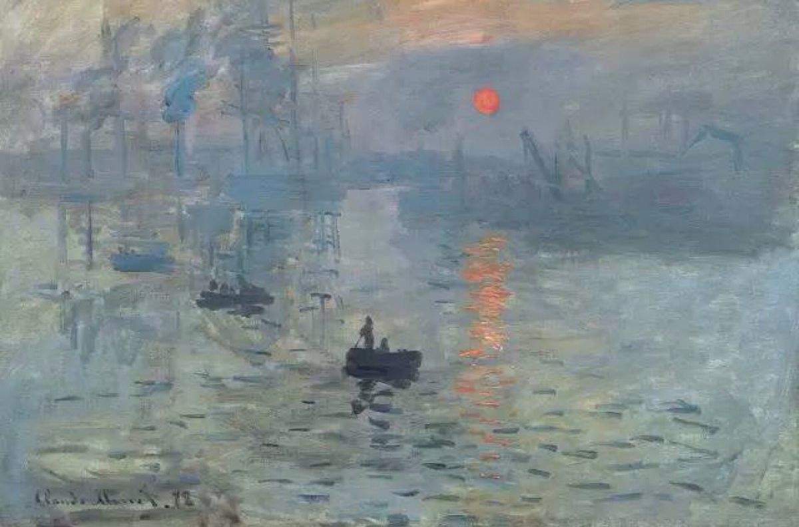
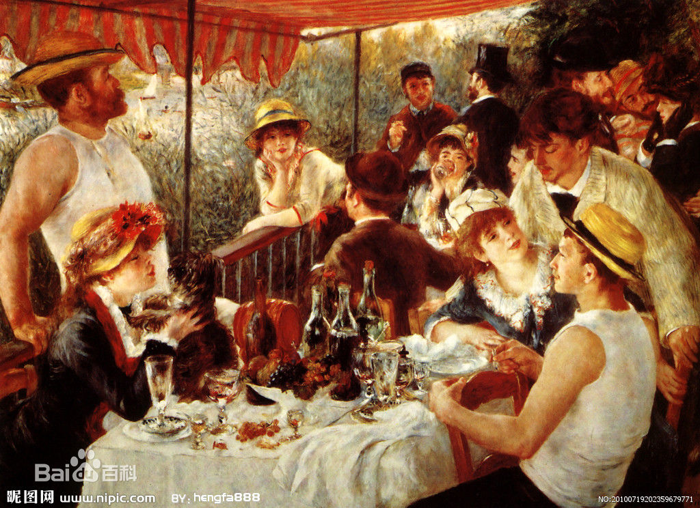
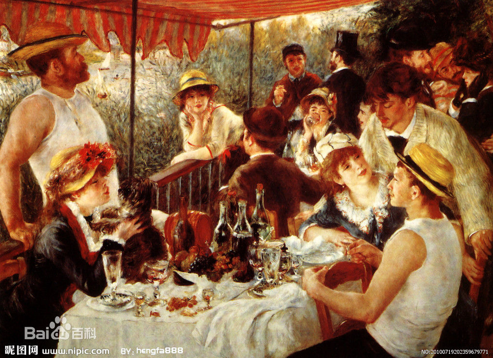

油画派系
印象主义
精华：一切色彩皆产生于光，走出画室写生，掌握色彩的冷暖变化和相互作用，是光与色的不凡成就。
弱点：讲究科学，当下依然兴旺，弱点是形体比较零乱、琐碎。
印象派是19世纪60—90年代在法国兴起的画派。其代表人物有莫奈、马奈、雷诺阿、德加、毕沙罗、西斯莱、莫里索、巴齐约等。 印象主义画家反对当时占正统地位的古典、学院主义，他们继续了法国现实主义前辈库尔贝“让艺术面向当代糊口”的思惟，使自己的创作进一步挣脱了对历史、神话、宗教等题材的依靠。同时受现代科学，尤其是光学的启发，以为一切色彩皆产生于光，于是他们依据光谱赤橙黄绿青蓝紫七色来调配颜色。因为光是瞬息万变的，他们以为只有捕获瞬间光的晖映才能揭示天然界的奥妙，因此在绘画中注重对外光的研究和表现。 他们主张走出画室，到户外深入原野、乡村和街头，在阳光下依据眼睛的观察和现场的直感作画，表现物象在光的照射下，色彩的微妙变化。印象主义绘画在暗影的处理上，一反传统绘画的玄色而改用有亮度的青、紫等色。他们把对天然清新生动的感观放到了首位，当真观察沐浴在光线中的天然景色，寻求并掌握色彩的冷暖变化和相互作用，以看似随意实则正确地捉住对象的迅捷手法，把变幻不居的光色效果记其实画布上，留下瞬间的永恒图像。印象主义画家又分为重光和色彩与重造型和素描两种类型。 印象派在当时是一种新思潮，遭到媒体和守旧人物的打压，当时因莫奈的油画《日出·印象》受到一位记者嘲讽为“印象派”而得名，他们欣然接受。 印象派“反古典美术运动”的影响遍及各国，获得了灿烂的成就。直到今天，他们的作品仍旧是人类最受欢迎的艺术至宝。。
代表作品
莫奈印象主义作品《日出·印象》
马奈印象主义作品《吹笛少年》
雷诺阿印象主义作品《游艇上的午餐》
 
